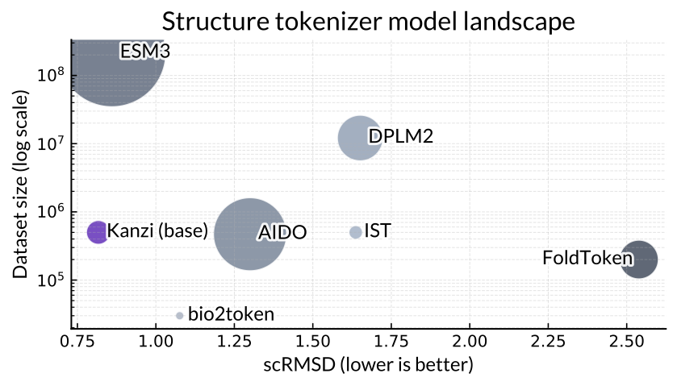
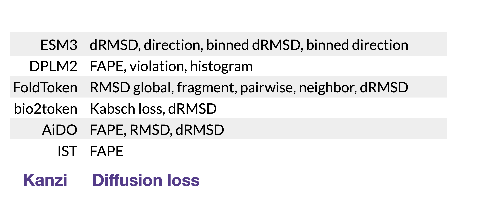
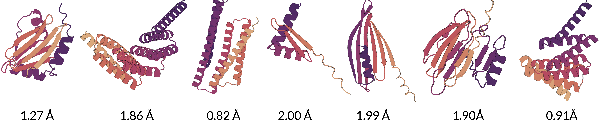

I recommend skimming the notes page for a more general introduction to generative biology.
One view of multimodal intelligence says that we are really good at making language models, so if we can just make other data modalities "look" like language, we can train models that can understand everything from images to video to proteins. Believers in this philosophy pursue tokenization, which compresses continuous data to discrete tokens that language models can consume. This strategy has been particularly successful in biology, where multimodal models like ESM3 [1] and DPLM2 [2] learn to fuse different data modalities. This may mean predicting a protein sequence from its structure, a structure from a sequence, generating a protein with desired properties expressed through text, etc.
The defining feature of successful machine learning is scalability. Good machine learning models use architectures that can learn from large amounts of data. Unfortunately, this hasn't been the trend for most foundation models in biology. ESM3 and DPLM2 both use somewhat finicky architectures. The main reason why is if you take a protein and rotate or translate it, you still have basically the same protein, so the argument goes that our networks should be naturally invariant to rotations and translations.
This work takes a different approach. We train encoders that learn rotational symmetries from data. This is pretty simple to do -- we use a transformer, randomly rotate the input protein, then use the resulting representations to condition a diffusion decoder. The diffusion decoder is trained with a flow matching loss. Because we need to integrate a trajectory to sample the diffusion decoder, it takes us much longer to decode a protein. On the other hand, we can train very efficiently on large amounts of data and we can learn to respect rotations without requiring very bespoke architectures.
This works very well. First, let's look at our reconstruction performance compared to other models.

The x-axis is performance, smaller is better. The y-axis is dataset size, and the radius of each model is roughly the the number of parameters. Our approach (Kanzi) performs better when trained on less data and with much smaller model parameter counts than most other methods, including models from frontier biology labs like ESM and DPLM.
One thing we particularly liked about this approach was it simplified the training pipeline. We've listed out some other methods with their loss functions below. Kanzi just needs a single diffusion loss, instead of a bunch of losses combined.

The point of a generative model is to generate proteins, not just reconstruct them. Autoregressive models trained using these tokens are capable of generating proteins -- here are some samples with the scRMSD (below 2.0 is considered a "real" generation) annotated.

These tokens have some problems -- it's hard to use them on representation learning tasks because they don't encode to an invariant representation. However, the strong reconstruction and generative performance really do seem to indicate that there's something right about this approach. Biomolecules are very sensitive to small perturbations, and diffusion provides a very effective tool to place atoms in exactly the right positions. We're excited to push this direction further.